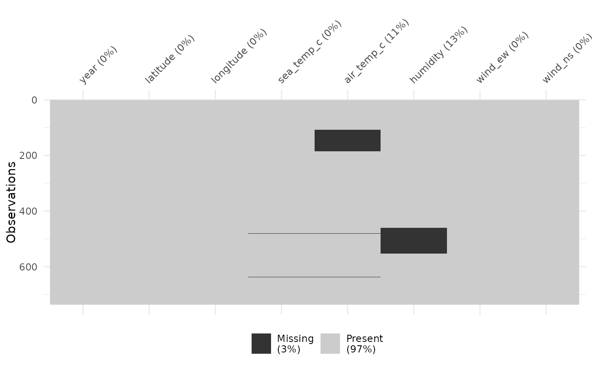

Real-time data from moored ocean buoys for improved detection, understanding and prediction of El Ni'o and La Ni'a. The data is collected by the Tropical Atmosphere Ocean project (https://www.pmel.noaa.gov/gtmba/pmel-theme/pacific-ocean-tao).
Usage
data(oceanbuoys)Details
Format: a data frame with 736 observations on the following 8 variables.
yearA numeric with levels
19931997.latitudeA numeric with levels
-5-20.longitudeA numeric with levels
-110-95.sea_temp_cSea surface temperature(degree Celsius), measured by the TAO buoys at one meter below the surface.
air_temp_cAir temperature(degree Celsius), measured by the TAO buoys three meters above the sea surface.
humidityRelative humidity(%), measured by the TAO buoys 3 meters above the sea surface.
wind_ewThe East-West wind vector components(M/s). TAO buoys measure the wind speed and direction four meters above the sea surface. If it is positive, the East-West component of the wind is blowing towards the East. If it is negative, this component is blowing towards the West.
wind_nsThe North-South wind vector components(M/s). TAO buoys measure the wind speed and direction four meters above the sea surface. If it is positive, the North-South component of the wind is blowing towards the North. If it is negative, this component is blowing towards the South.
Examples
vis_miss(oceanbuoys)

# Look at the missingness in the variables
miss_var_summary(oceanbuoys)
#> # A tibble: 8 × 3
#> variable n_miss pct_miss
#> <chr> <int> <num>
#> 1 humidity 93 12.6
#> 2 air_temp_c 81 11.0
#> 3 sea_temp_c 3 0.408
#> 4 year 0 0
#> 5 latitude 0 0
#> 6 longitude 0 0
#> 7 wind_ew 0 0
#> 8 wind_ns 0 0
if (FALSE) { # \dontrun{
# Look at the missingness in air temperature and humidity
library(ggplot2)
p <-
ggplot(oceanbuoys,
aes(x = air_temp_c,
y = humidity)) +
geom_miss_point()
p
# for each year?
p + facet_wrap(~year)
# this shows that there are more missing values in humidity in 1993, and
# more air temperature missing values in 1997
# see more examples in the vignette, "getting started with naniar".
} # }